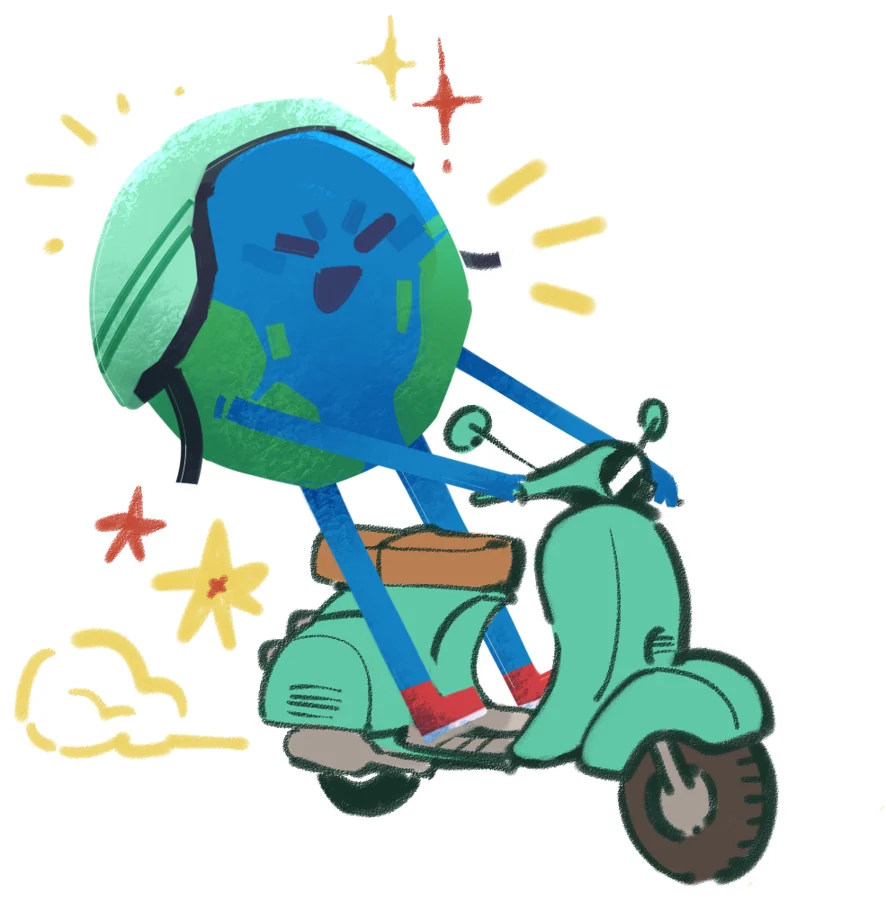

Peta © OpenStreetMap contributors
Peta
Klik titik di peta atau nama tempat di bawah untuk memasang penunjuk arah.
WASD melaju · seret layar putar kamera · E bicara · F turun/naik skuter · M peta

Area anggota · Arena Game
Keliling Dunia ELCY
Naik skuter ELCY keliling lima kota sungguhan: jalan, gedung, sungai, dan landmark dibuat dari peta asli. Ajak ngobrol enam warga di tiap kota pakai bahasa mereka. Kumpulkan cap paspor!
Progres disimpan di perangkat ini. Skor tiap kota yang selesai masuk papan peringkat Arena.